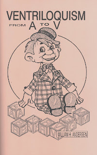

Ventriloquism A-V
2/5/2010
{kind=link}

You've heard me say this before, but this is one of my favorite books when a person needs an introduction to ventriloquism or a ventriloquist overview. The author briefly covers a vairety of subjects including:
ABC- A Basic Course of Instruction
D - Dummy
E - Education & Entertainment
F - Figures
G - Grammar
H - Habits (Behavior), Habits (Clothing)
I - Impromptu Ventriloquism
J - Jokes
K - Kindness
L - Lighting
M - Manipulation, Muffled Voice
N - Novelty
O - Old Man & Old Woman Figues
P - Polyphonism, Practice, Pasture, & Publicity
Q - Quench a Dry Throat
R - Routines, Religious Ventriloquism, Remuneration (How to Charge)
S - Speech, Style, Showmanship
T - Timing
U - Uses of Ventriloquism
V - Ventriloquist
There you have it - "Ventriloquism From A-V"! All in 60 pages! You gotta' love it! William Andersen, author.
Winner*: By today's drawing, CAROLE PAGELS has won one FREE copy of Ventriloquism From A-V . (Carole: *You have 14 days to claim your book.)
To all: If you have not not signed up to be eligible for all gift/prize drawings, you can do so now by sending your name to mahertalk@aol.com . There is no cost; no obligation. Join the fun!
To Purchase: I sell Ventriloquism From A-V for $6.00 Postpaid. Contact me by email to order. I can either send you a PayPal money request, or you can mail me your check or money order.
My current 99 cent eBay Auctions include a copy of this book as well. You will find all my current eBay auctions here: http://shop.ebay.com/Parke62/m.html?_dmd=1&_in_kw=1&_ipg=50&_sop=12&_rdc=1